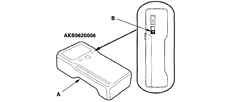
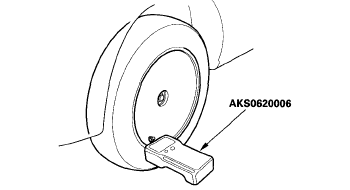

TPMS Reminder Reset - Procedure 01
NOTE:
There is no TPMS reset procedure when re-inflating tires to the correct specification. Ensure tires are inflated to recommend pressure, and the TPMS indicator will go out shortly.
NOTE:
If a flat tire is replaced with the spare tire, and the flat tire is stored in the cargo area, the low pressure indicator will stay on but the appropriate tire indicator will go off. This prevents the customer from thinking there is a problem with the spare tire. When the flat tire is taken out of the vehicle for repair, the TPMS indicator will come on because the system is no longer receiving the signal from the tire's transmitter.
All four tire pressure sensor IDs must be memorized to the TPMS control unit whenever you do any of these actions:
- Replace the TPMS control unit.
- Replace the tire pressure sensor
- Substitute a known-good wheel with tire pressure sensor
When doing a tire rotation, memorizing the sensors in not needed.
Memorizing The Tire Pressure Sensor IDs
NOTE:
For vehicles that use this procedure, a tire pressure sensor activation tool is needed. As early as 2007 Honda started requiring the use, on some models, of the TPMS Sensor Activation Tool ATEQ VT55 instead of the standard Sensor Initializer Tool AKS0620006 or Sensor Activation Tool Bartec Wheelrite Tech 300-J-48714. Honda is not entirely clear on which models the VT55 only can be used. The models listed below have ID memorizing procedures that name the VT55 only. The procedures for all other models name the VT55 and one of the older type activation tools, or just an older activation tool. The VT55 can be used on all models with initiator-less TPM Systems.
- Crosstour, CR-V (2007-12), CR-Z, Fit (2009 & later): Only use the TPMS Sensor Activation Tool ATEQ VT55
- All Other Models: Can use either TPMS Sensor Initializer Tool AKS0620006 or TPMS Sensor Activation Tool Bartec Wheelrite Tech 300-J-48714
NOTE:
To ensure the control unit memorizes the correct ID, the vehicle with the new sensor must be at least 10 ft (3 m) away from other vehicles that have tire pressure sensors.
- With the ignition switch in LOCK (0), connect the HDS to the data link connector (DLC) located under the driver's side of the dashboard.
- Turn the ignition switch to ON (II)
- Make sure the HDS communicates with the vehicle and the TPMS control unit. If it doesn't, troubleshoot the DLC circuit.
- Select Sensor ID Learning from the mode menu on the HDS.
- Follow HDS screen prompts to turn on the TPMS sensor initializer tool.NOTE: On the TPMS Sensor Initializer Tool (AKS0620006), verify that the power switch (B) is in the "Low" position. See Fig 1. If the power switch is in the "High" position, more than one sensor or sensors on other vehicles may be activated. Make sure the power switch is in the "Low" position.
- Hold the TPMS sensor initializer tool near one wheel, memorize the pressure sensor ID by following the screen prompts on the HDS. See Fig 2.NOTE:
- If you turn the ignition switch to LOCK (0) before memorizing all four sensor IDs, the memorizing ID is cancelled.
- If more than one sensor ID is displayed on the HDS, verify that the power switch is in the "LOW" position, the vehicle has not been driven for 5 minutes, and there are no other vehicles within 10 ft (3 m).
- See the HDS Help menu for specific instructions.
- Repeat step 6 for each wheel until all four sensor IDs are memorized. When all four IDs are memorized, the low tire pressure indicator blinks
- Turn the ignition switch to LOCK (0).
- Disconnect the HDS from the DLC.
- Test-drive the vehicle at 28 mph (45 km/h) or more for at least 1 minute.
- Make sure the low tire pressure indicator does not blink.
- Make sure the tires are inflated to the specified tire pressure listed on the doorjamb sticker.
{kind=link}

Courtesy of AMERICAN HONDA MOTOR CO., INC.{kind=link}
Fig 2: Identifying TPMS Sensor Initializer Tool (AKS0620006) On Wheel (ATEQ VT55 & Tech 300-J-48714 Are Similar)

Courtesy of AMERICAN HONDA MOTOR CO., INC.